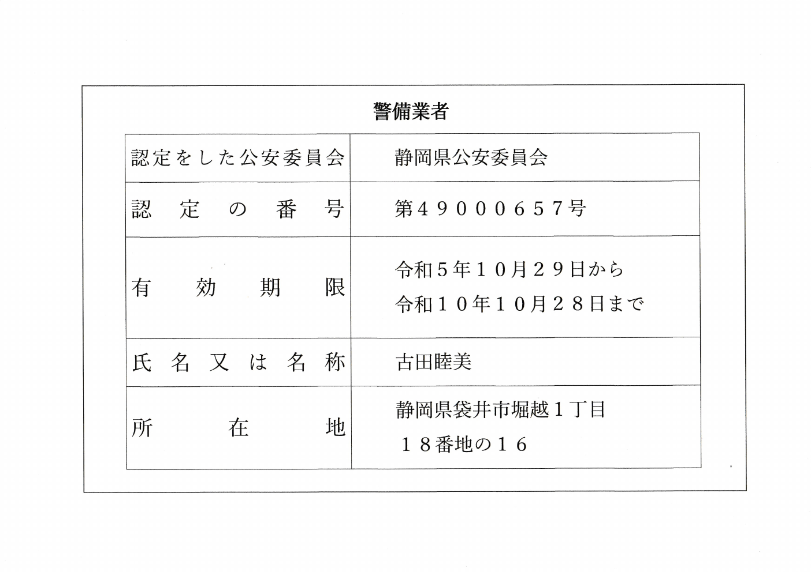

道路工事の交通誘導
片側交互通行や通行止めなど、道路状況に応じた車両・歩行者の誘導を行います。
袋井市・静岡県西部の交通誘導警備
道路工事・建設現場の交通誘導を中心に。
確かな判断と誠実な対応で、地域の安全を支えます。
私たちの使命
安全を守る仕事に、近道はありません。
一つひとつの現場に真摯に向き合い、周囲への目配りと丁寧な声かけを積み重ねる。セイブ警備は、地域の皆さまが安心して過ごせる環境を、現場の最前線から支えます。
警備事業
セイブ警備の主事業は交通誘導警備です。道路工事や建設現場の条件に合わせ、歩行者・一般車両・作業車両の安全で円滑な通行を支えます。
片側交互通行や通行止めなど、道路状況に応じた車両・歩行者の誘導を行います。
工事車両の出入りを確認し、通行する方や近隣の皆さまに配慮した誘導を行います。
人と車が集まる場所で、分かりやすい合図と声かけによる誘導を行います。
袋井市を拠点に、静岡県西部へ。
場所・日程・現場の状況をお聞かせください。
暮らし・建物サポート
警備で培った責任感と細やかな目配りを、暮らしの安心にも。状況に合わせてご相談を承ります。
準備中のサービスを含みます。対応内容・開始時期はお問い合わせください。
サービスごとに、料金と作業内容をご確認いただけます。
表示価格は税込の作業料金の目安です。
01 暮らし・建物サポート
定期巡回、外観確認、換気・通水・簡易清掃。建物の状態を写真でご報告します。
月額 3,300円〜 （税込）
ライト／月1回・最低3か月
空き家管理の料金・作業内容02 暮らし・建物サポート
残す品を確認しながら、仕分け・袋詰め・搬出補助・簡易清掃までお手伝いします。
30,000円〜 （税込）
1R～1K／収集運搬・処分費別
遺品整理の料金・作業内容04 暮らし・建物サポート
必要な品を探しながら、仕分け・袋詰め・建物内搬出・簡易清掃を行います。
50,000円〜 （税込）
1K～1DK／収集運搬・処分費別
ゴミ屋敷の片付けの料金・作業内容家庭から出る不要品・ごみの積込み、収集運搬、処分は袋井市の許可業者が行います。収集運搬・処分費、家電リサイクル料金、専門工事費は表示価格に含まれません。正式金額は現地確認後にご案内します。
会社案内
目の前の現場に責任を持ち、
信頼される仕事を積み重ねていきます。
警備業者標識
警備業法に基づく標識を掲載しています。認定番号、有効期限、所在地などをご確認いただけます。
警備業者標識をPDFで開く警備員指導教育責任者資格者証
資格者証をPDFで確認する
採用情報
経験の有無よりも、誠実に仕事へ向き合う姿勢を大切にしています。交通誘導の仕事に興味がある方、地域に役立つ仕事を始めたい方をお待ちしています。
募集条件・勤務時間・給与など、詳しくはお電話でお問い合わせください。
採用について相談するお問い合わせ
警備のご依頼、暮らし・建物のご相談、採用のお問い合わせを承ります。
警備・採用のお電話
0538-44-3348電話受付 7:00–19:00
緊急のご用件は、受付時間外でもお電話ください。
分かる範囲で構いません。